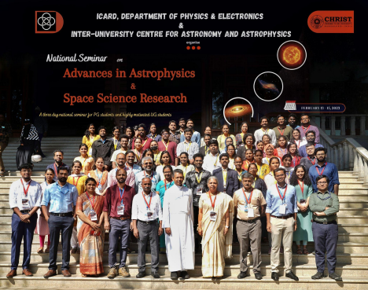

Proceedings of the National Seminar on Advances in Astrophysics and Space Science Research (NSAAASSR) 2023
The Department of Physics and Electronics at CHRIST (Deemed to be University) in Bangalore, Karnataka, organised the National Seminar on Advances in Astrophysics and Space Science Research (NSAASSR) from February 13 to 15, 2023. The seminar was organised as part of the IUCAA Centre for Astronomy Research and Development (ICARD), CHRIST (Deemed to be University). We report the proceedings from the seminar.
The Department of Physics and Electronics at CHRIST (Deemed to be University) in Bangalore, Karnataka, organised the National Seminar on Advances in Astrophysics and Space Science Research (NSAASSR) from February 13 to 15, 2023. The seminar was organised as part of the IUCAA Centre for Astronomy Research and Development (ICARD), CHRIST (Deemed to be University). The primary functions of the ICARDs are:
- To contribute to the development of innovative teaching methods designed for Astronomy. This includes the development of upto date course structures and new kinds of experiment/data analysis sessions which can be a part of a starting or existing Astronomy course in a University. To hold frequent workshops/schools/meetings at various levels at the host University/College and nearby regions.
- To have an active public outreach program for Astronomy.
- To be visiting Centre where nearby Astronomers can visit.
IUCAA accredited the Department of Physics and Electronics as ICARD on October 1, 2022.

The three-day seminar aimed to provide postgraduate and motivated undergraduate students with insights and knowledge on current developments in Astronomy and Astrophysics under the ICARD activities. There is a dearth of conferences and seminars specifically tailored to meet the needs of undergraduate and postgraduate students. In light of this, a seminar has been thoughtfully planned to give students a unique opportunity to showcase and present their research work on an exclusive platform. It provided attendees with a comprehensive and interactive learning experience, featuring talks by prominent scientists, student contributions, and hands-on data analysis sessions. The students’ contributory talks were based on projects completed or currently in progress during their UG/PG programmes. The seminar saw active participation from over 40 students from different Institutes and Universities who were selected based on the submitted abstracts.
Proceedings for Day One
The Inaugural session of the seminar was presided over by Dr Fr Jose CC, honourable Pro-Vice Chancellor, CHRIST (Deemed to be University). The chief guest for the occasion was Dr Annapurni Subramaniam, Director Indian Institute of Astrophysics. They shared great insight into the need and multifold applications of the field of astronomy in day-to-day life. After a brief tea break, Dr Annapurni gave a plenary talk on “Astronomy from the ground and space-based telescopes”. The talk narrated the transition of astronomy from using the position of stars to navigate the night sky to using telescopes to unveil star formation in far-off galaxies. Attendees learned about accessing data from various space missions and using it for scientific purposes. They were also introduced to the country’s present and future space telescopes facilities, such as AstroSat and INSIST. The talk also briefly outlined the research works of the team led by Dr Annapurni.
Dr Ajith Parmeswaran, ICTS, Bangalore, delivered the second plenary talk. The topic was “Gravitational wave astronomy: A new window to the Universe”. Dr Ajith participated virtually in the seminar. The talk focussed on how the observational confirmation of gravitational waves has enabled us to understand our Universe better. Participants were introduced to the precise instruments to detect and study these waves. The discussion also included information on CMB Bharat, a consortium for Indian cosmology, and LIGO India, allowing for a new perspective on comprehending the cosmos.
The Seminar then had 12 talks by the participants in extragalactic and stellar astronomy. The audience received the talks well, leading to many fruitful discussions. The first day concluded with informal discussions with the participants and resource persons.
Proceedings for Day Two
The second day began with a plenary talk by Dr Shyama Naredranath, URSC, Bangalore. The topic was “Exploration of the Moon: paradigm shifts”. The talk discussed various theories that explain the origin of the Moon. The talk also narrated how the abundance of different volatile elements like sodium and oxygen will enable us to understand the formation scenario of the Moon. Dr Shyama also talked about India’s significant contribution to understanding the Moon, namely Chandrayaan 1 and 2.
Dr Manoj Puravankara, TIFR, Mumbai, delivered the second plenary talk. The title of the talk was “Exploring the invisible Universe: the story of Infrared Astronomy”. Dr Manoj joined the seminar online. The talk discussed the importance of infrared astronomy and how the field has helped us unravel the Universe that lies shrouded in the visible spectrum, such as the interstellar shocks, protoplanetary disks, and reddening due to interstellar dust, among others. The talk also highlighted the new age space telescope, JWST, and how the telescope has helped us achieve great insights into the far ends of the Universe. Dr Manoj then discussed his team’s research using the JWST facility.
Dr Dipanjan Mukherjee, IUCAA, Pune, delivered the third plenary talk on “Understanding how jets from Supermassive Black Holes affect galaxy evolution”. The talk started with the galaxy colour-magnitude diagrams and the three distributions seen: the blue cloud, the red sequence and the green valley. Then, various quenching mechanisms prevalent in galaxies were discussed. The talk then highlighted how the jets emanating from black holes influence the evolution of the host galaxies. After the lunch break, the seminar had a series of five cosmology and space science talks by the student participants. Discussions with the panel and audience gave more significant insights into their research.
A hands-on session on astronomical tools such as SAO DS9 and Topcat was scheduled next. The session was taken by Mr Akhil Krishna and Mr Suman Bhattacharya, PhD Scholars, CHRIST (Deemed to be University). The participants enthusiastically learnt to utilise these tools to visualise and analyse data from worldwide astronomical facilities. The participants were then led on a campus tour. They were introduced to the various facilities available in the University, including the Research and Development block and the different instruments such as the X-ray diffractometers, Electron Microscopy, UV- Visible spectrometer, Fluorometer, Microwave Synthesizer, Solar Simulator, and SEM, among others which the students can make use of.
The last event for the day was a public talk by Dr Dipankar Bannerjee, Director, ARIES, Nainital. The lecture title was “India’s first Space Solar Observatory: Aditya L1”. The talk focussed on coronal mass ejections and sunspots. Dr Dipankar also discussed the upcoming first solar space mission from India, Aditya L1, and the various instruments to study our closest star. The mission’s main objective is to understand the coronal heating and solar wind acceleration, initiation of the coronal mass ejection, flares and near-Earth space weather, the coupling and dynamics of the Solar Atmosphere, and the solar wind distribution and temperature anisotropy.
Proceedings for Day Three
The third day began with a plenary talk by Dr Smitha Subramanian, IIA, Bangalore, on “An introduction to extragalactic astronomy”. The talk started with the Great Debate: Shapley-Curtis debate. The participants were then introduced to Hubble’s tuning fork diagram and the various types of galaxies known to us. Dr Smitha then proceeded to explain the formation of galaxies. The talk also emphasised galactic evolution and the various triggering mechanisms involved.
Dr Vaidehi S Paliya, IUCAA, Pune, delivered the second plenary talk on “An introduction to Gamma-ray Universe”. The talk discussed the most extreme and energetic emissions, namely, Gamma-ray bursts. Several gamma-ray production mechanisms and detection techniques were discussed. The talk highlighted how gamma-ray studies were key in understanding various physical phenomena such as AGNs, blazars etc.
The final plenary talk was delivered by Dr Tapas Baug, SNBNCBS, Kolkata, on the topic “Galactic massive star formation: Large-scale to small-scale view”. The talk discussed massive stars and the various mechanisms involved in their formation. The talk also raised our current limitations in understanding this large-scale phenomenon entirely due to the limitations of telescopes. Dr Tapas briefly discussed his work during the talk.
In addition to the presentations, the seminar included networking opportunities, allowing attendees to connect with other scientists and researchers from around India. A hands-on session was conducted by Dr Arun Roy, IIA and Mr Shridharan Baskaran, Research Scholar, CHRIST (Deemed to be University), on various tools available in Python for astronomy. The module Astropy was discussed in detail. Participants were encouraged to write their codes using the discussed modules simultaneously. Participants could visualise several astronomical images by the end of the hands-on session.
The following panel discussion focused on answering queries put forward by the participants. The panellists included Dr Maheshwar Gopinathan, IIA, Bangalore, Dr Savithri H Ezhikode, Post-doctoral fellow, CHRIST (Deemed to be University), Mr Gourav Banerjee, Research Scholar, CHRIST (Deemed to be University) and Mr Cysil Tom Baby, Project Intern, CHRIST (Deemed to be University). Queries including how to apply for PhD positions, how to apply for projects, and how to approach professors for projects and internship opportunities were discussed in the panel discussion. It was well received by the participants and resource persons alike.
The seminar concluded with the valedictory ceremony, where the best presentations were awarded. The chief guest of the ceremony was Dr Maheshwar Gopinathan. The event coordinator, Dr Sreeja S Kartha, gave a brief seminar report. The seminar concluded with great satisfaction and happiness from the participants. The seminar was a great success, bringing together leading scientists, researchers and students to share their latest findings and exchange ideas. The seminar highlighted the importance of collaboration and innovation in advancing scientific knowledge and understanding the field of astronomy and space science.
You may find copies of the abstract books and the posters presented at the NSAASSR on the seminar website..